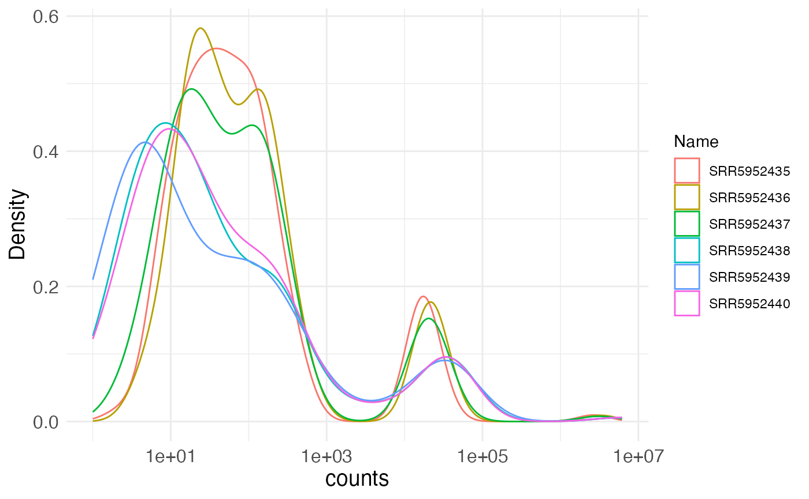

Plot distribution of observed values
plotDistributions.RdPlot distribution of observed values
Usage
plotDistributions(
se,
selAssay = "counts",
groupBy = NULL,
plotType = "density",
facet = FALSE,
pseudocount = 0
)Arguments
- se
A
SummarizedExperimentobject, typically generated bysummarizeExperiment().- selAssay
Character scalar specifying the assay in
seto use for the plotting.- groupBy
Character scalar specifying a column from
colData(se)to use for coloring or stratifying the plots.- plotType
Character scalar specifying the type of plot to construct. Either
'density','histogram'or'knee'.- facet
Logical scalar, indicating whether or not to facet the plot by the values specified in the
groupBycolumn.- pseudocount
Numeric scalar, representing the number to add to the observed values in the
selAssayassay before plotting.
Examples
se <- readRDS(system.file("extdata", "GSE102901_cis_se.rds",
package = "mutscan"))[1:200, ]
plotDistributions(se)
#> Warning: log-10 transformation introduced infinite values.
#> Warning: Removed 19 rows containing non-finite outside the scale range
#> (`stat_density()`).
